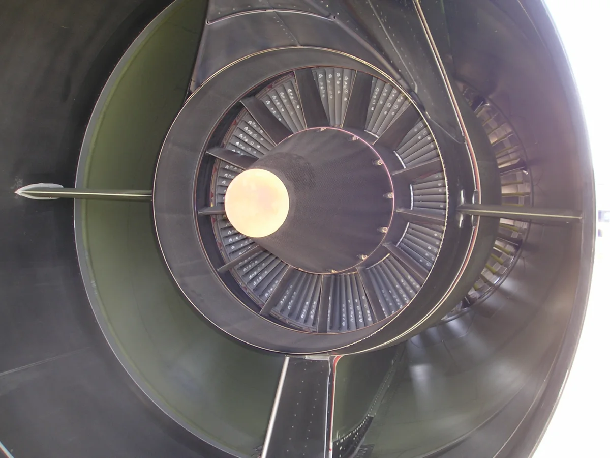

Medición del horno y trazabilidad en el tratamiento térmico aeroespacial
Convierta los requisitos de medición, registro y revisión de la especificación del cliente en un flujo documentado.
Consultar sobre su aplicación
Requisitos de proceso y control
| Aplicación | Qué revisar |
|---|---|
| Uniformidad de temperatura | Identifique la zona de trabajo y la disposición de la carga. Registre el ensayo de uniformidad de temperatura (TUS) y los criterios de aceptación. |
| Exactitud del sistema de medición | Identifique los canales de control y registro, los instrumentos de referencia y los requisitos aplicables de la prueba de exactitud del sistema (SAT). |
| Registros y revisión | Vincule el equipo, la versión de la receta, el lote, las lecturas y las desviaciones. Confirme la aprobación y la retención con el cliente. |
Procesos, productos y lecturas relacionados
Consultar sobre su aplicación
Indique el material, el horno, la especificación del cliente y las mediciones y los registros requeridos.